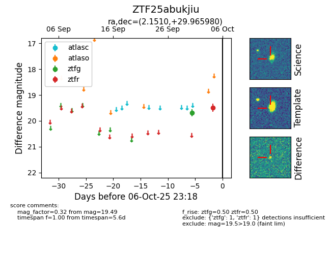

FINK: ZTF25abukjiu
Lasair: ZTF25abukjiu
ALeRCE: ZTF25abukjiu
ZTF25abukjiu (ztf,fink)
equatorial (ra, dec) = (2.1510,+29.96598)
galactic (l, b) = (111.9906,-31.99410)

last ztfg=19.68, ztfr=19.49
1 ztfg, 1 ztfr detections